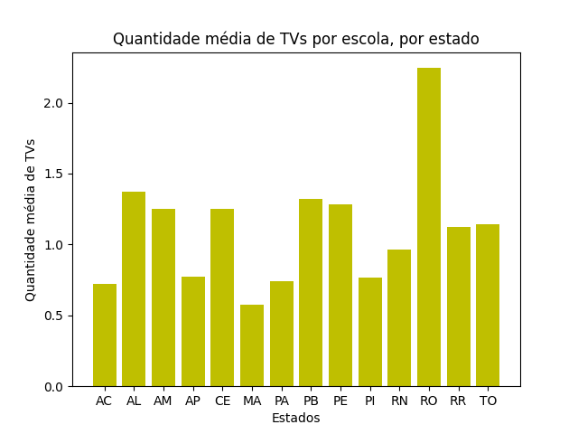

Visualizações de Dados
João Felipe Vilas
É notável a disparidade de estrutura e muitas vezes de qualidade de ensino entre escolas públicas e privadas ao redor do nosso país. Com isso, em mente é interessante analisar a distribuição do foco de nível do ensino ao longo das categorias de ensino, seja ensino infantil, ensino fundamental e ensino médio e analisar onde se encontram os maiores esforços da iniciativa privada e os maiores esforços da iniciativa pública para o ensino. A partir do que foi encontrado vemos uma presença mais considerável do setor privado na educação infantil, o que faz sentido uma vez que a mesma é relativamente opcional para a educação completa de uma pessoa, abrindo espaço para o mercado de educação infantil voltado para famílias com maior poder quisitivo. Vemos também maior presença de matrículas no ensino fundamental, o que era esperado uma vez que é o período estudantil mais longo. Além disso podemos perceber também a maior presença de ensino médio em escolas estaduais, uma possível explicação pra isso seria o fato de que o ensino médio é a etapa final para completar a educação básica brasileira, logo há um incentivo maior de completar o mesmo pelas jurisdições de cada estado a fim de futuramente ingressar em uma instituição de ensino superior e/ou mercado de trabalho. (Breve legenda: 1 - Federal; 2 - Estadual; 3 - Municipal; 4 - Privada)

Luís Felipe Marciano
Observando a base de dados sobre o censo escolar de 2021, notamos que ela possui dados sobre as escolas de todos os estados da região Norte do Brasil e de alguns estados do Nordeste. A ideia então é fazer uma análise dos estados do Norte, agrupando por UF. Quanto as colunas, a esolhida para a análise foi a "IN_INTERNET", que é do tipo booleana: 1 quando a escola possui a acesso a internet e 0 quando não possui acesso. A ideia da análise é contar o número de escolas sem acesso à internet por estado da região Norte, visto que sabemos como é dificil levar internet para muitos locais do interior dessa região. O tipo de gráfico escolhido é o de barras, que é a melhor representação para uma contagem. Quanto aos resultados do gráfico, podemos ver que milhares de escolas não possuem acesso à internet nessa região, principalmente no estado do Pará, com mais de 7000.

Gustavo Tironi
O gráfico criado mostra a quantidade média de TVs por escola em alguns estados do norte e nordeste brasileiro (Acre, Alagoas, Amazonas, Amapá, Ceará, Maranhão, Pará, Paraíba, Pernambuco, Piauí, Rio Grande do Norte, Rondônia, Roraima, Tocantins). Com base nas informações do gráfico, podemos ver que, dos estados apresentados, Roraima se destaca com uma média de 2,2 TVs por escola, por outro lado, o Maranhão possui a menor média, com uma média de apenas 0,6 TVs por escola. Além disso, podemos ver que a maioria dos estados está na faixa de 1 a 1,5 TVs por escola, o que, no entanto, é insuficiente para um uso educacional eficaz da tecnologia. Estes números refletem uma necessidade urgente de investimentos em infraestrutura tecnológica nas escolas para proporcionar uma educação de qualidade e preparar os alunos para o futuro. Analisando esses resultados, em contraste com as escolas separadamente, vemos uma grande discrepância, já que a escola com mais TVs possui 81, evidenciando também a desigualdades entre as escolas.
João Pedro Tambosi
Para essa visualização, pretendi analisar como alguns dados se comportavam em diferentes regiões. Após uma análise exploratória, decidi visualizar a distribuição das datas de ínicio das aulas nas escolas de diferentes regiões. No caso da base escolhida, só temos informações sobre duas regiões: Norte e Nordeste (porém, o código funciona para bases com mais regiões). O conteúdo da visualização talvez não seja tão útil, dado que não conseguimos ver muita diferença, mas mesmo assim achei interessante trazer essa informação para esse trabalho. Conseguimos ver uma pequena mudança de translação do formato de sino da distribuição, indicando que, em média, escolas no Norte começam as aulas mais tarde (possivelmente devido a uma questão cultural, mas não sou nenhum antropólogo para afirmar isso).